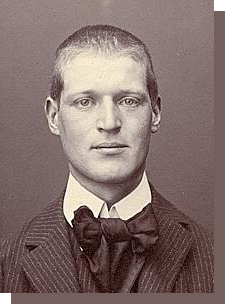
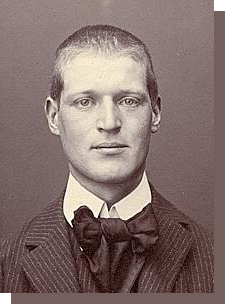

Arcibald Rajs
Sudbina vam je u vlastitim rukama
Blistava buducnost ili
ponovo ropstvo
 

01 | KO JE BIO
KO JE BIO
ARČIBALD RAJS?
Rodolf Arčibald Rajs (nem. Rudolph Archibald Reiss;
Nemačka, 8. jul 1875 — Kraljevina SHS, 8. avgust 1929)
je bio švajcarski forenzičar, publicista, doktor hemije i
profesor na Univerzitetu u Lozani. Istakao se kao kriminolog
radom na istraživanju zločina nad srpskim stanovništvom u
vreme Prvog svetskog rata.
02 | CITATI
CITATI
ARČIBALDA RAJSA
O NERADU SRBA
“Koliko ste samo licnih i, jos gore, koliko ste
gubitaka po svoju zemlju podneli zbog tog
olakog dangubljenja”
O VERSAJSKOJ NEMACKOJ
“Cim Nemac ponovo postane dovoljno snazan,
ujedinice se sa Austrijom i, udruzeni ce
nastojati da povrate ono sto su izgubili”
O MINISTRIMA
“Najbolji nacin da postanes bogat jeste
da postanes ministar”

03 | HVALA MU
OPROSTAJ
ARČIBALDU RAJSU
Svega tri nedelje posle smrti ispunila se velika Rajsova želja -
prenos njegovog srca na Kajmakčalan. "Zavetnu želju dr Rajsa"
opevao je Vojislav Ilić mlađi:
1
Kad mi se ovde, u zemlji srpskoj,
završi staza životnih dana,
želim da mi srce počiva
visoko, navrh Kajmakčalana
2
Tog najdičnijeg vrha Srbije,
gde orli oblak prodiru,
da tamo budem pokraj drugova
koje sam gled'o kad umiru...
3
...Kad srpski narod bejaše poš'o
u borbu protiv sile varvarske,
on nam je žurno u pomoć doš'o
iz živopisne svoje Švajcarske.
4
Zavoleo je Srbiju našu,
svoju je sudbu sa njenom slio,
s njom je klec'o, posrt'o, pad'o
mada je rodom Švajcarac bio.
5
Taj vitez pera, spomenu čijem
celo se srpstvo zahvalno klanja,
živ se herojski za nas borio,
a sada nam, mrtav, srce poklanja.